Closing the skill security gap
The OWASP Agentic Skills Top 10 (AST10) documents the 10 most critical security risks in agentic AI skills across all major AI agent platforms. Skills represent the execution layer that gives agents real-world impact: they define not just what resources agents can access, but how they orchestrate multi-step workflows autonomously.
While significant attention has been devoted to securing large language models (LLMs) and the Model Context Protocol (MCP) tool layer, the intermediate behavior layer — embodied in agentic skills — has emerged as a particularly vulnerable and under-protected component of the AI agent ecosystem. This project exists to close that gap.
By the numbers
| Metric | Figure | Source |
|---|---|---|
| Skills scanned | 3,984 | Snyk ToxicSkills (Feb 2026) |
| Skills with security flaws | 1,467 (36.82%) | Snyk ToxicSkills (Feb 2026) |
| Skills with critical issues | 534 (13.4%) | Snyk ToxicSkills (Feb 2026) |
| Confirmed malicious payloads | 76+ | Snyk ToxicSkills (Feb 2026) |
| ClawHavoc campaign: malicious skills | 1,184 | Antiy CERT (Feb 2026) |
| OpenClaw instances internet-exposed | 135,000+ | SecurityScorecard (Feb 2026) |
| CVEs disclosed (OpenClaw alone) | 9 (3 with public exploits) | Endor Labs (Feb 2026) |
| Skills analyzed across all registries | 30,000+ | National CIO Review / Cisco (2026) |
| Skills containing at least one vulnerability | >25% | National CIO Review (2026) |
No comprehensive security framework or dedicated guidance for agent skills existed before this project. That gap is what AST10 addresses.
Where each risk hits the skill lifecycle
v1 is in public review
Comments on the Top 10 content go in the shared review doc — issues and PRs remain open for transparency, but the doc is where v1 feedback is tracked.
Open the v1 Review DocQuick Security Checklist
Use this checklist to assess your agent skill security posture:
Registry & Installation
- Only install skills from verified publishers with code signing
- Enable automated scanning for all skill installations
- Review skill permissions before installation
- Pin skill versions to prevent automatic malicious updates
Runtime Security
- Run agents in isolated environments (containers/sandbox)
- Implement network restrictions for agent processes
- Monitor agent file system and network activity
- Regularly audit installed skills and their dependencies
Governance & Monitoring
- Maintain inventory of all deployed agent skills
- Implement approval workflows for skill installations
- Enable comprehensive audit logging for agent actions
- Establish incident response procedures for skill compromises
Development Practices
- Sign all published skills with cryptographic keys
- Include comprehensive permission manifests
- Test skills in isolated environments before publishing
- Document security considerations in skill metadata
Getting Started by Role
For Security Teams
- Review this document and the complete Top 10 detail pages for full risk descriptions, attack scenarios, and OWASP mappings.
- Conduct a skill inventory across all agent platforms in use — treat this as an immediate priority given active exploitation confirmed in 2026.
- Use the Security Assessment Checklist for reviewing installed skills.
- Implement the governance framework described in AST09: inventory, approval workflow, audit logging, and agentic identity controls.
- Subscribe to ClawHub, skills.sh, and platform-specific security advisories.
For Skill Developers
- Least privilege: Declare a minimal permission manifest; request only what your skill genuinely needs (AST03).
- Safe parsing: Use safe YAML/JSON loaders; never deserialize untrusted skill configs without sandboxing (AST04).
- Sign your skills: Implement ed25519 signing before publication; include content_hash in your manifest (AST01/AST02).
- Pin dependencies: Lock all nested dependencies to immutable hashes — never version ranges (AST07).
- Honest metadata: Accurately declare risk_tier, permissions, and requires; do not understate scope (AST04).
- Protect identity files: Never request write access to SOUL.md, MEMORY.md, or AGENTS.md unless your skill's core function requires it — and document why (AST03).
For Platform Developers
- Default sandbox: Make container/Docker isolation the default for skill execution; make host-mode an explicit opt-in (AST06).
- Safe deserialization: Disable dangerous YAML/JSON tags in all skill loaders by default; validate against a schema before execution (AST04).
- Registry scanning: Implement behavioral scanning at publish time and at install time; pattern matching alone is insufficient (AST08).
- Provenance infrastructure: Support the Universal Skill Format; implement Merkle-root transparency logs for your registry (AST01/AST02/AST10).
- Audit logging: Emit structured logs for all skill actions (file access, shell commands, network calls, memory writes) (AST09).
- Trust prompts: Do not allow repository-controlled configuration to execute before explicit user trust confirmation (AST02).
Target Audience
| Role | Primary Concerns | Key AST Risks |
|---|---|---|
| AI Platform Developers | Secure skill runtimes, registries, installers, and CI/CD integration | AST01, AST02, AST04, AST05, AST06, AST08 |
| AppSec / Product Security | Govern skills in enterprise deployments; review skill PRs | AST03, AST04, AST05, AST07, AST09 |
| Skill Authors | Write safe manifests, scripts, and metadata; ship signable packages | AST03, AST04, AST05, AST07 |
| GRC / Compliance | Map skill risks to NIST AI RMF, ISO 42001, EU AI Act | AST05, AST09, AST10 |
| CISOs / Security Leadership | Understand blast radius, incident scope, and governance gaps | AST02, AST05, AST06, AST09 |
| Developers / Engineers | Safely install and use skills without introducing unreviewed risk | AST01, AST02, AST07 |
Leadership & Governance


AIVSS Distinguished Review Board
The OWASP AIVSS (Agentic AI Vulnerability Scoring System) project's Distinguished Review Board comprises world-renowned cybersecurity leaders, former government officials, and industry pioneers who provide strategic guidance and expert oversight. We thank them for their guidance, several of whom have also supported this project's work.


OWASP AIVSS Founding Members
The OWASP AIVSS (Agentic AI Vulnerability Scoring System) project is a sibling OWASP initiative focused on scoring the severity of agentic AI vulnerabilities. Its founding members are recognized here as OWASP founding members in the agentic AI security space — many of them have also contributed directly to the Agentic Skills Top 10 project's research and review process.
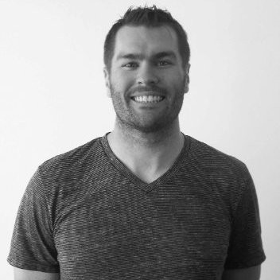
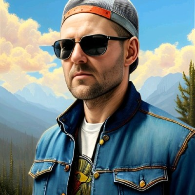
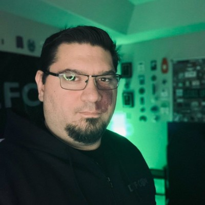
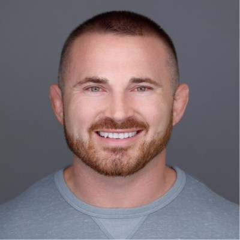
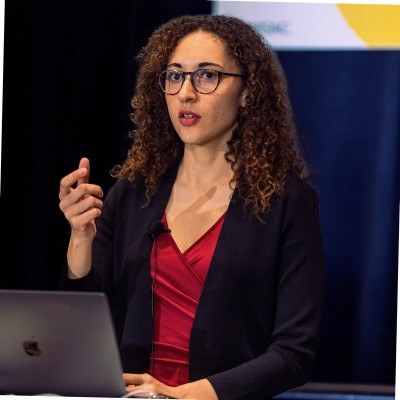

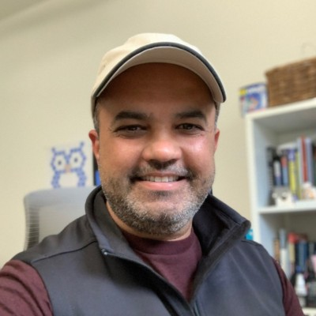
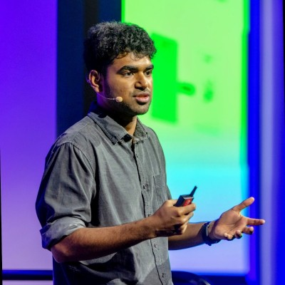

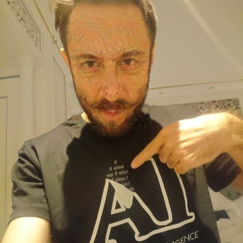
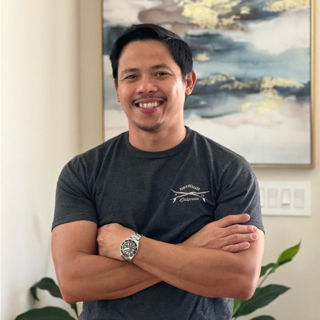
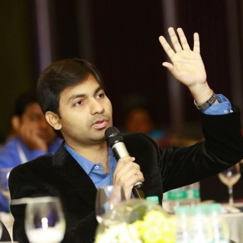
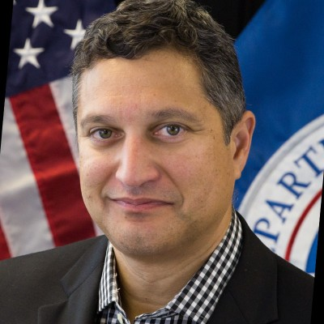
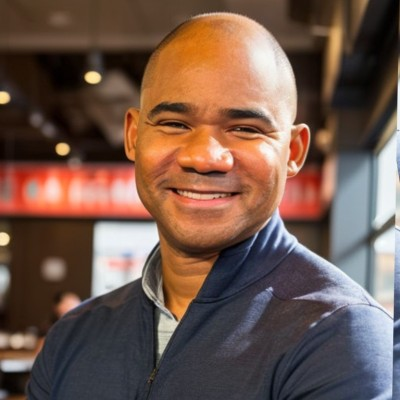

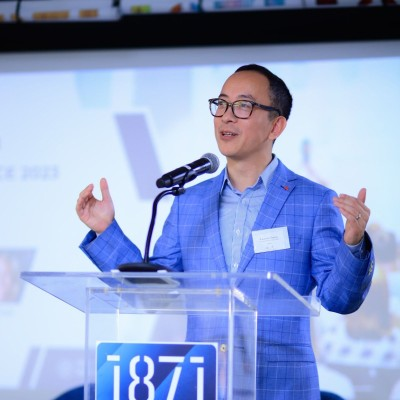